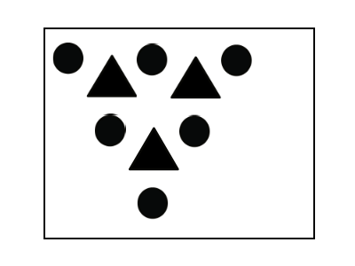
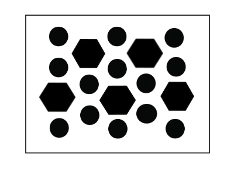

By applying the same symmetry operation around the objects created by the first operation we can begin to see how
a repeatable lattice is built in both trigonal and hexagonal point groups. Both rotaional symmetries can be arranged
onto the same lattice pattern.

